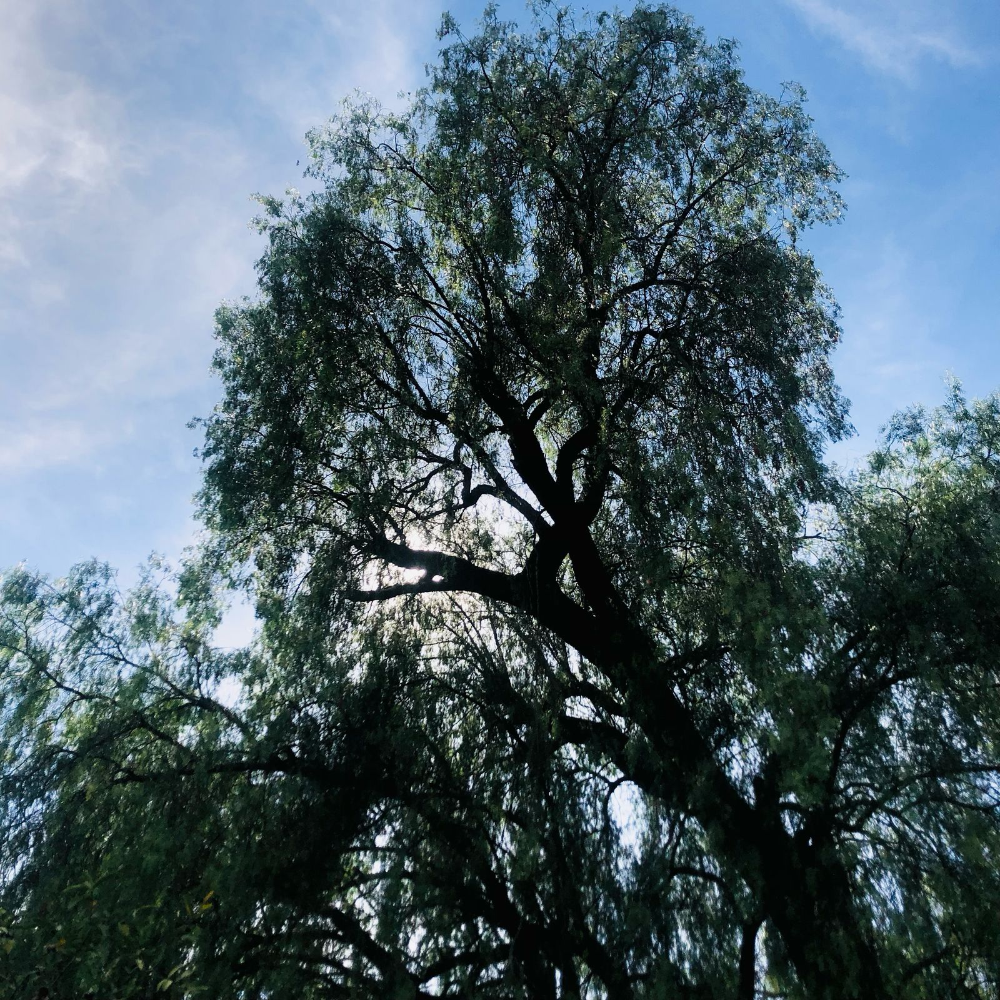

HISTORIA DEL PÍRUL
El árbol de pirul tiene una historia rica y diversa. Sus orígenes se remontan a las antiguas civilizaciones sudamericanas, donde era considerado un árbol sagrado por sus propiedades medicinales y espirituales. Se creía que su presencia ahuyentaba malos espíritus y protegía la tierra.
USOS MEDICINALES U OTROS
El árbol del pirul también es conocido por sus usos medicinales usando sus hojas y frutos para crear infusiones utilizadas para dolencias digestivas y respiratorias además de su corteza utilizada para crear artesanías y juguetes.
CONDICIONES DE CRECIMIENTO
El árbol de pirul prospera en suelos bien drenados y con exposición al sol. Es fundamental proporcionarle un espacio amplio para que pueda crecer sin restricciones. Además, debe protegerse de heladas y vientos fuertes durante sus etapas iniciales de crecimiento.
CARACTERÍSTICAS
Es un árbol pequeño a mediano que puede llegar a crecer 25 metros de alto